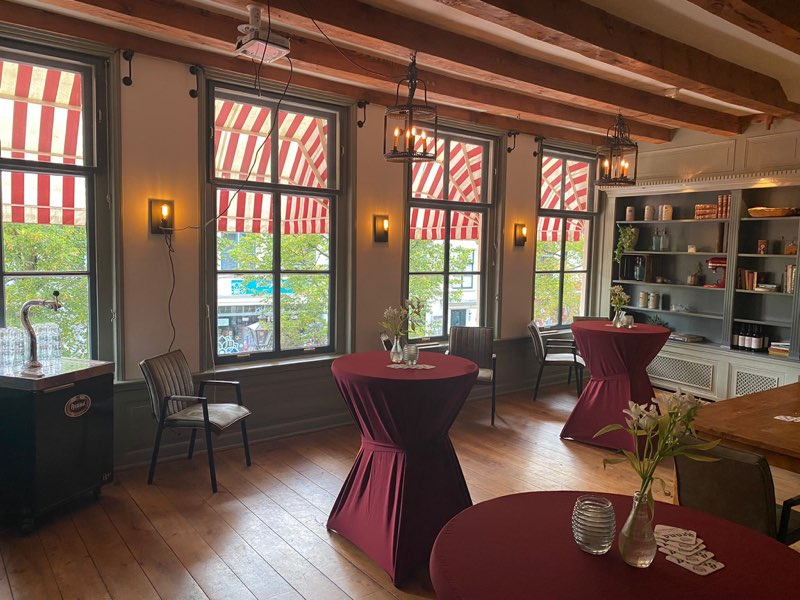

Een borrel in de Heerenkamer
Drankjes naar keuze en hapjes uit onze keuken. Hieronder lees je wat er allemaal kan en wat het kost. We bespreken je wensen graag vooraf, zodat de avond soepel verloopt.

Dranken
Voor de drank zijn er twee mogelijkheden: je betaalt voor wat er gedronken is, of je kiest voor een drankarrangement met een vaste prijs per persoon. Wil je je borrel extra feestelijk beginnen? We kunnen een glas prosecco (€ 6) of een cocktail (€ 8,50) bij binnenkomst serveren.
Borrelhapjes
Met je groep kies je één van de twee arrangementen.
Scarlatti borrelarrangement
6,00 p.p.- Op tafel: nootjes
- 3 rondes met een mix van onze luxe bittergarnituur
Luxe borrelarrangement
9,00 p.p.- Op tafel: nootjes en nacho’s met salsa en guacamole
- Ronde 1: licht gepeperde fuet uit Catalonië
- Ronde 2: truffelfriet met truffelmayonaise en grana padano
- Ronde 3: mix van onze luxe bittergarnituur
- Vegetarisch mogelijk
Presentatie of fotoshow? Onze beamer kun je gebruiken voor € 25.
Klinkt goed?
Vul het aanvraagformulier in, dan sturen we je zo snel mogelijk een vrijblijvend voorstel op maat.